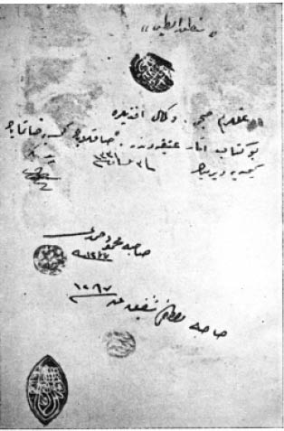
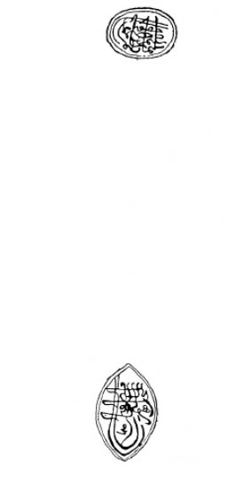

Mantık Al-Tayr’da Geçen Yer Adları
A
Arap (diyarı) 1504
B
Bağdat 1876, 1939, 2426
Basra 2193
Ç
Çin 434, 435, 740, 743, 825, 1225, 3826, 3829
H
Habeş 245
Hicaz 1552
Hindistan 2448
Horasan 3024
İ
İrem (bağı) 2225
K
Kâbe 337, 477, 1218, 1298, 1299, 1399, 1432, 1444, 1447 1462, 1819, 1825, 2168, 4032, 4251
Kafdağı 715, 1614, 1615, 1836, 2882, 3102
Kerbela 2640
M
Mekke 1466, 1468, 1817
Mısır 1966, 2845, 3055, 3059, 4024
N
Nil 448
Nişabur 1784, 1787
R
Rum (ülkesi) 1208, 1216, 1218, 1225, 1439, 1463, 1504, 1864, 1865
S
Seba 619
Ş
Şehirlerin en hayırlısı (Mekke) 336
T
Tatar (diyarı) 434
Tur (dağı) 625, 626, 3242, 3244
Türkistan 2794

